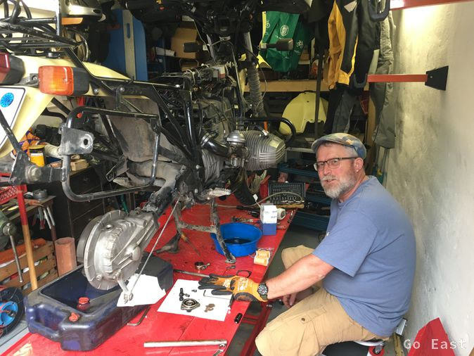
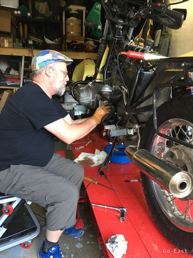
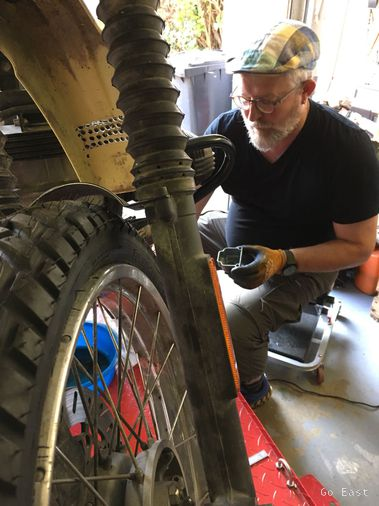
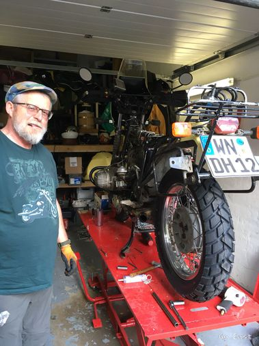

Vorbereitungen am Motorrad
Da schon länger außer Wechsel des Motorenöls nichts mehr an der Maschine gemacht worden war, waren einige Stunden notwendig, alles wieder in Ordnung zu bringen und sich wieder mit der Technik vertraut zu machen.
Dass man zum Ausbauen der Batterie das Hinterrad und den Stoßdämpfer ausbauen muss, hatte ich zwar nicht mehr auf dem 'Schirm', aber nach guten 6 Jahren ist eine neue Batterie sicher kein Luxus.
Da, um an die Getriebeölablassschraube heranzukommen auch die Abgasanlage demontiert werden musste, war das auch kein großer Mehraufwand mehr.
Wenigstens hat man somit nach langer Zeit die Schrauben mal wieder gelöst und bleibt künftig vor Überraschungen verschont. Immer das Positive an der Sache sehen.

Es wurden die Öle von Motor (mit Filterwechsel), Getriebe, Kardan und Hinterachsgetriebe gewechselt und dabei gleich notiert, welche Werkzeuge (Schlüsselweiten der Ring- und Gabelschlüssel) verwendet wurden. Damit soll sichergestellt werden, dass auch tatsächlich die Werkzeuge mitgenommen werden, die man braucht.
So dunkel hatte ich noch in Erinnerung, dass man für den Ölfilterwechsel, das Motorlager lösen musste, um den Motor abzusenken, sonst kommt man nicht an die Innensechskanschrauben vom Ölfilterdeckel.
Ventile einstellen (Einlass 0,1mm, Auslass 0,15mm hatte sich gelohnt, da diese wirklich nicht mehr gestimmt hatten. Es war tatsächlich ein deja-vu, da ich das sicher die letzten 5 Jahre nicht mehr gemacht hatte. Flash-back die alten Schrauberzeiten werden wieder präsent. Na ja, das Alter fordert seinen Tribut. Früher bin ich auf dem Boden herumgekrabbelt und heute hat man Hebebühne, Hocker mit Rollen und Montagehandschuhe (hi hi).
. 
Auch das Vergasereinstellen war schon längere Jahre nicht mehr gemacht worden und ein Blick in das Werkstatthandbuch hatte mich gleich wieder auf die Spur gebracht. Wenn dann nach getaner Arbeit beide Zylinder wieder schön synchron das Gas annehmen ist das gleich ein erhebendes Gefühl.

Die erste Probefahrt brachte dann noch einige kleine Mängel zutage, die es noch zu beheben gilt.
-
Seitenständer muss verlängert werden, um die Maschine bei Beladung nicht zu schräg abstellen zu müssen.
-
Gepäckträger muss noch modifiziert werden, dass die Gepäckrolle gut befestigt werden kann.
-
Lenkkopflager hat Spiel und muss nachjustiert werden.
-
Alle Züge schmieren.
-
Elektrik unter dem Tank gut mit Kabelbinder befestigen und sicherstellen, dass sich die Steckverbindungen nicht lösen.